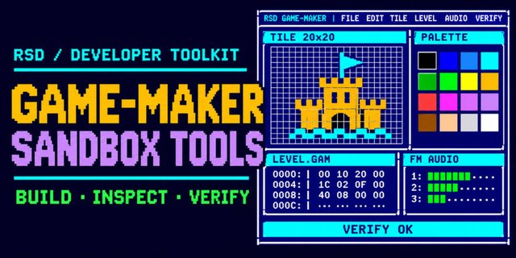

Game-Maker Sandbox Tools
Build, inspect and verify Game-Maker data

The tooling that builds the new Game-Maker: Sandbox Edition games in code, as its own npm package: drawing, native formats, audio, headless simulation and disc images.
Executive summary
Why it exists
The new games for Game-Maker: Sandbox Edition are written entirely in code, and the helpers that draw, compose and check them lived inside the app. I split them into their own public repository and npm package, keeping their git history.
Outcome
Published on npmjs and GitHub Packages, with its own tests and releases.
My role
Maintainer. The split was done by AI agents under my direction, as with the rest of Game-Maker: Sandbox Edition.
Technical overview
How it works
Subpath imports instead of one root: drawing (pixels, palettes, fonts, text, compositing, shading), native format writers re-exported from the engine (blocks, characters, monsters, maps, games, palettes, sound, VOC, FLI and more), audio (songs, instruments, resampling with a windowed-sinc filter), simulation for headless play checks and route assertions, and iso9660 for disc images with long names. Browser-safe parts are kept apart from the parts that need Node.js.
Hard parts
Keeping generated games byte-identical while the code moves: the tools must build the same bytes in their own repository as they did inside the app.